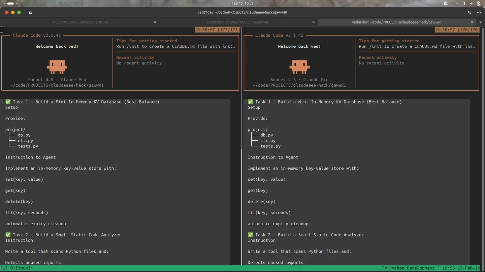
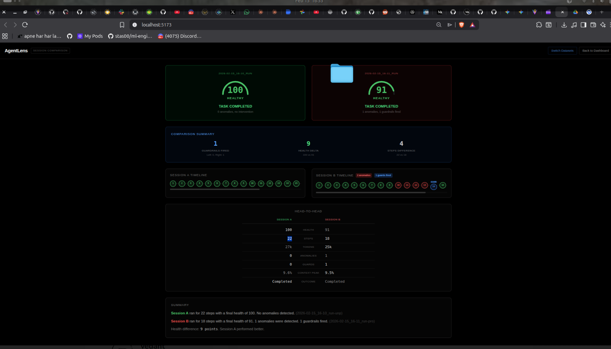

The Problem
AI coding agents like Claude Code, Cursor, and Aider are magical when they work. But when they fail? You're left staring at a terminal, wondering what went wrong after 30 minutes and $5 of API costs.
We analyzed hundreds of Claude Code sessions and found five recurring failure patterns:
The Solution: AgentLens
AgentLens is an open-source observability tool that acts as a transparent proxy between your AI agent and the LLM API. Set one environment variable and get:
👁️ Real-Time Detection
Watch your agent's trajectory unfold step-by-step. Anomaly badges show loops, error spirals, and context rot as they happen.
🛡️ Automatic Guardrails
When a failure pattern is detected, AgentLens injects course-correction directly into the system prompt. No crashes, no manual intervention.
⏰ Time Travel Debugging
Full conversation state saved at every step. Rewind to before the failure, get an AI-generated fix, and resume with a clean slate.
How It Works
ANTHROPIC_BASE_URL=http://localhost:8000/proxy/v1 and use your
agent normally. No SDK wrappers, no code changes.
Claude Code CLI
│
│ ANTHROPIC_BASE_URL=http://localhost:8000/proxy/v1
│
▼
┌──────────────────────────────────────┐
│ AgentLens Proxy Server (:8000) │
│ │
│ ✓ Intercept every API call │
│ ✓ Build trajectory timeline │
│ ✓ Detect loops, spirals, rot │
│ ✓ Inject guardrails when needed │
│ ✓ Save checkpoints automatically │
└──────────────┬───────────────────────┘
│
▼
Anthropic API (api.anthropic.com)
│
▼
Dashboard (:5173) — real-time updatesThe Interception Pipeline
Every API call flows through four stages:
- Session Detection: Groups API calls into sessions based on 5-minute time gaps. Creates human-readable IDs.
- Guardrail Check: Analyzes the last few steps for failure patterns. If detected, prepends a coaching message to the system prompt.
- Forward to Anthropic: Sends the modified request to the real API with zero added latency.
- Record & Analyze: Saves the step to disk and computes health score in real-time.
Guardrails in Action
When the proxy detects a failure pattern, it automatically injects a coaching message. The agent never knows it's being coached — it just sees additional context and adjusts.
| Failure Pattern | Detection | Intervention |
|---|---|---|
| Loop Detection | Same tool sequence repeats 3+ times | "You are repeating the same tool sequence. Try a different strategy." |
| Error Spiral | 3+ consecutive error-retry cycles | "You are in an error spiral. Pause and take a different approach." |
| Context Rot | Context window >70% full | "Your context is 75% full. Summarize progress and focus." |
| Context Compacting | Context >60% full + >6 messages | Uses Claude Haiku to summarize old turns, frees ~40% of context |
A/B Comparison Results
We ran the same task through two agents — one unprotected, one with AgentLens. The results:
| Metric | Unprotected | Protected | Improvement |
|---|---|---|---|
| Steps | 21 steps | 4 steps | ↓ 81% |
| Health Score | 89/100 | 100/100 | Perfect |
| Tokens Used | 136,000 | 8,000 | ↓ 94% |
| Loops | 1 | 0 | ✓ Prevented |
| Context Decay | 3 events | 0 | ✓ Prevented |
Health Score
AgentLens computes a composite health score (0-100) from four weighted components:
| Component | Weight | What It Measures |
|---|---|---|
| Structural | 40% | Loops + repetition patterns |
| Memory | 30% | Context window pressure |
| Stability | 20% | Error spiral severity |
| Diversity | 10% | Tool usage entropy |
Interpretation: 80-100 = Healthy | 55-79 = Degraded | 30-54 = Failing | 0-29 = Critical
Quick Start
1. Start the Backend
cd backend
python -m venv .venv && source .venv/bin/activate
pip install -r requirements.txt
# Create .env with your API key
echo "ANTHROPIC_API_KEY=sk-ant-..." > .env
# Start the server
python server.py2. Start the Dashboard
cd dashboard
npm install
npm run dev3. Use It
# Set the proxy URL and use Claude Code normally
ANTHROPIC_BASE_URL=http://localhost:8000/proxy/v1 claude
# The dashboard updates in real-time!
# All sessions auto-save to backend/sessions/Why This Matters
AI coding agents are becoming critical infrastructure for developers. But without observability, we're flying blind. AgentLens brings the same level of monitoring and intervention that we expect from production systems to the world of AI agents.
The Vision: A future where every AI agent has observability built-in. Where failures are detected before they cascade. Where developers have full visibility and control over their agent's behavior.
Tech Stack
Backend: Python 3.11+, FastAPI, httpx, Anthropic SDK
Frontend: React 19, TypeScript, Tailwind CSS, Vite
Storage: JSONL files + checkpoints on disk. No database needed.
What's Next
- Multi-provider support (OpenAI, Google, Mistral)
- Streaming guardrails (inject corrections mid-stream)
- Custom guardrail rules via config file
- Per-session cost tracking and budget alerts
- Agent benchmarking suite
- Predictive health (ML model to predict failures)